brengen
to bring
onregelmatigrang 256Movement & positiongetekend
brachtheeft gebracht
- Scene
- one adult walks towards a plain front door holding a closed cardboard box level in both hands, eyes on the door; the door stands ajar and an empty adult hand reaches out towards the box. The box has just touched that hand and the carrier has not let go.
- Must read
- a box carried towards a half-open door where a hand reaches out to take it.
- Avoid
- a box already in the hands of the second person with the first one gone (geven); a parcel laid down on a doorstep with nobody there (zetten); both arms up with a full crate on top of the head (dragen); a van at the kerb with boxes inside (rijden).
- Alt text
- Een volwassene draagt een dichte doos met twee handen naar een halfopen deur, waar al een hand naar de doos reikt.
brengen.png · rang 256 · A1 onregelmatig · lexicon woorden.tsv

lopen
to walk
onregelmatigrang 292Movement & positiongetekend
liepheeft/is gelopen
- Scene
- one adult walks from left to right over empty ground, caught mid-stride: the front foot flat on the ground, the back foot just lifted on its toes, the arms swinging in opposition, back straight, eyes ahead. Nothing else in the picture.
- Must read
- an ordinary unhurried walk, one foot down and one just leaving the ground.
- Avoid
- both feet off the ground and the body leaning forward (rennen); a raised knee and a straight swinging arm (marcheren); a person standing still beside a bicycle (fietsen); a walking stick; speed lines or dust puffs.
- Alt text
- Een volwassene is midden in een stap: de voorste voet staat plat op de grond, de achterste voet is net van de vloer.
lopen.png · rang 292 · A1 onregelmatig · lexicon woorden.tsv

mogen
to be allowed
onregelmatigrang 293Abstract & generalgetekend
mochtheeft gemogen
- Scene
- one adult in a plain cap lifts a long barrier arm across a path with one hand and waves a second adult through with the other open hand; the second adult is mid-step, passing under the raised arm. A literal scene, no symbol, and nothing is written anywhere.
- Must read
- a barrier lifted and a hand waving a person through.
- Avoid
- a flat palm held up in front of a closed barrier to stop someone (stoppen); a heavy sack on the back (moeten); a raised arm with a flexed fist (kunnen); a ticket or coins handed over (betalen); a sign with an arrow.
- Alt text
- Een poortwachter tilt een slagboom op en wuift een voorbijganger met een open hand door.
mogen.png · rang 293 · A1 onregelmatig · lexicon woorden.tsv
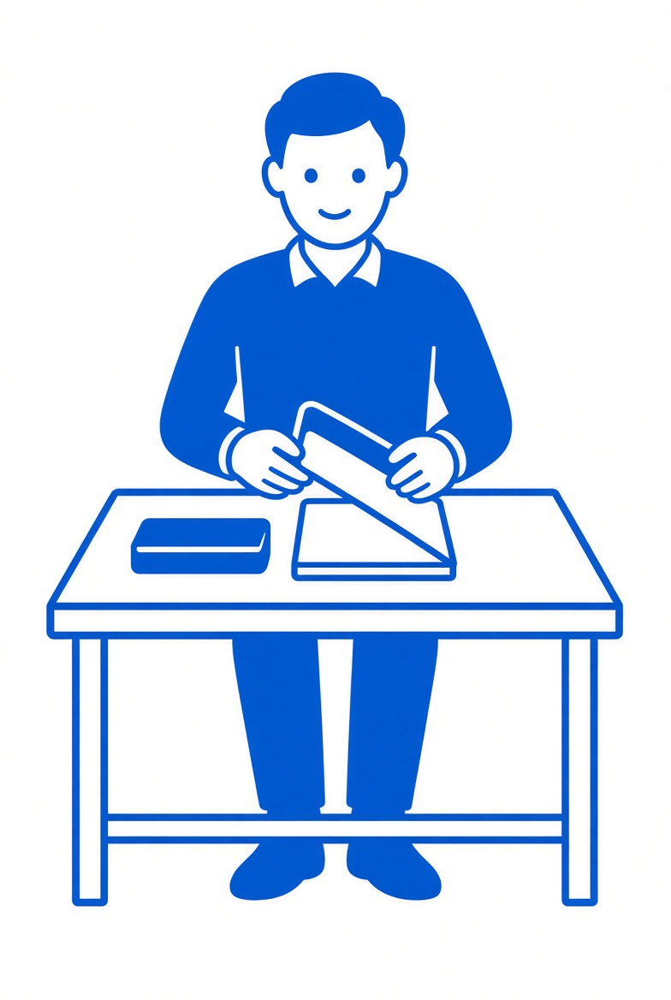
beginnen
to begin
onregelmatigrang 298Timegetekend
begonis begonnen
- Scene
- one adult sits at a plain table with a closed notebook and a closed pen case in front of them; the hands lift the front cover, raised a hand width off the table, the first blank page showing. The moment is the cover coming up, not later.
- Must read
- the cover of a closed notebook being lifted for the first time.
- Avoid
- an open notebook already half full on the table (schrijven); a hand placed flat on a shut book with the pen lid on (wachten); a person walking through an open door into a room (verlaten); a bell or a whistle; a stopwatch.
- Alt text
- Een volwassene zit aan een tafel en tilt net het voorplat van een gesloten schrift op, met een dichte pennenbak ernaast.
beginnen.png · rang 298 · A1 onregelmatig · lexicon woorden.tsv
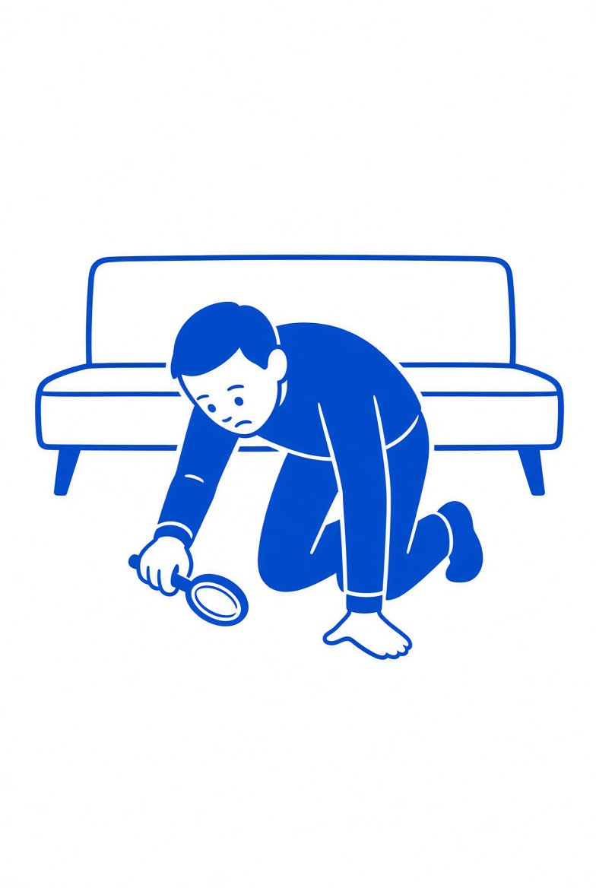
zoeken
to search
onregelmatigrang 304Abstract & generalgetekend
zochtheeft gezocht
- Scene
- one adult kneels on the floor beside a low sofa, one hand holding the seat cushion lifted and tipped forward while the other hand reaches into the gap beneath it, the head bent down and the eyes on that dark gap. Nothing of the lost object is visible.
- Must read
- a hand reaching under a lifted cushion with the face bent close.
- Avoid
- an object held up in a raised hand (vinden); a person walking away from a table with keys left on it (vergeten); a big magnifying glass held to one eye (onderzoeken); a hand shielding the eyes looking into the distance (kijken).
- Alt text
- Een volwassene knielt bij een lage bank, houdt een kussen opgetild en tast met de andere hand onder de zitting.
zoeken.png · rang 304 · A1 onregelmatig · lexicon woorden.tsv

lezen
to read
onregelmatigrang 307Communication & languagegetekend
lasheeft gelezen
- Scene
- one adult sits at a plain table with an open book lying flat in front of them, both hands resting at its edges, the head bowed and the eyes on the pages; the pages show short plain lines of print and no letters. A mug stands off to the side, untouched.
- Must read
- eyes turned down on an open book held flat on the table.
- Avoid
- a pen touching the paper (schrijven); a laptop screen with both hands on the keys (werken); a person holding a book up with one finger marking the place (leren); a closed book.
- Alt text
- Een volwassene zit aan een tafel met een open boek, beide handen aan de rand en de ogen op de bladzijden.
lezen.png · rang 307 · A1 onregelmatig · lexicon woorden.tsv

liggen
to lie
onregelmatigrang 332Movement & positiongetekend
lagheeft gelegen
- Scene
- one adult lies flat on their back on a made bed on top of the covers, both arms at their sides, the head on a pillow, eyes wide open and looking up at the ceiling. The blanket is not pulled up and the knees are straight. Nothing else in the room.
- Must read
- a person flat on their back on the bed with both eyes open.
- Avoid
- closed eyes and a blanket pulled up to the chin (slapen); the body bent up at the waist with the feet on the floor (zitten); the body curled on one side with both knees drawn up (slapen); a book or a phone in the hands.
- Alt text
- Een volwassene rust met gestrekte benen op de rug op een opgemaakt bed, de ogen open en naar boven gericht.
liggen.png · rang 332 · A1 onregelmatig · lexicon woorden.tsv
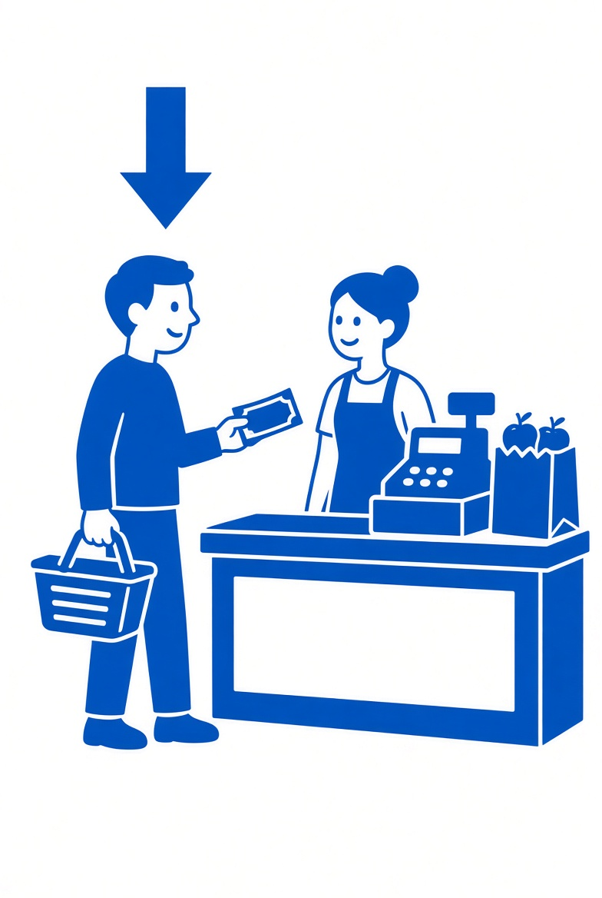
kopen
to buy
onregelmatigrang 381Money & tradegetekend
kochtheeft gekocht
- Scene
- one adult stands at a plain counter and pushes a folded banknote across it towards a shopkeeper, who is sliding a paper bag of apples back the other way; the note and the bag are both halfway along the counter, and the two adults face each other.
- Must read
- a note and a bag of apples meeting on the counter between two people.
- Avoid
- a price tag or a till display (betalen); a bag lifted off the counter and taken away while the hand still holds a coin (halen); the same bag held out at a market stall with the person turned away (verkopen); a credit card.
- Alt text
- Een volwassene legt een briefje geld op de toonbank; de winkelier schuift er een papieren zak met appels naartoe.
kopen.png · rang 381 · A1 onregelmatig · lexicon woorden.tsv

vergeten
to forget
onregelmatigrang 396Thought & knowledgegetekend
vergatheeft/is vergeten
- Scene
- one adult walks away from a small table, looking back over one shoulder with a slight frown; a bunch of keys on a round ring lies alone on the table behind them, and one hand is raised to the side of the head.
- Must read
- keys left behind on the table while the person walks off.
- Avoid
- a person kneeling to look under a sofa (zoeken); the keys held up in triumph (vinden); a crossed-out calendar; a hand over the mouth.
- Alt text
- Iemand loopt bij een tafel vandaan en kijkt om; op de tafel blijft een bos sleutels liggen.
vergeten.png · rang 396 · A1 onregelmatig · lexicon woorden.tsv
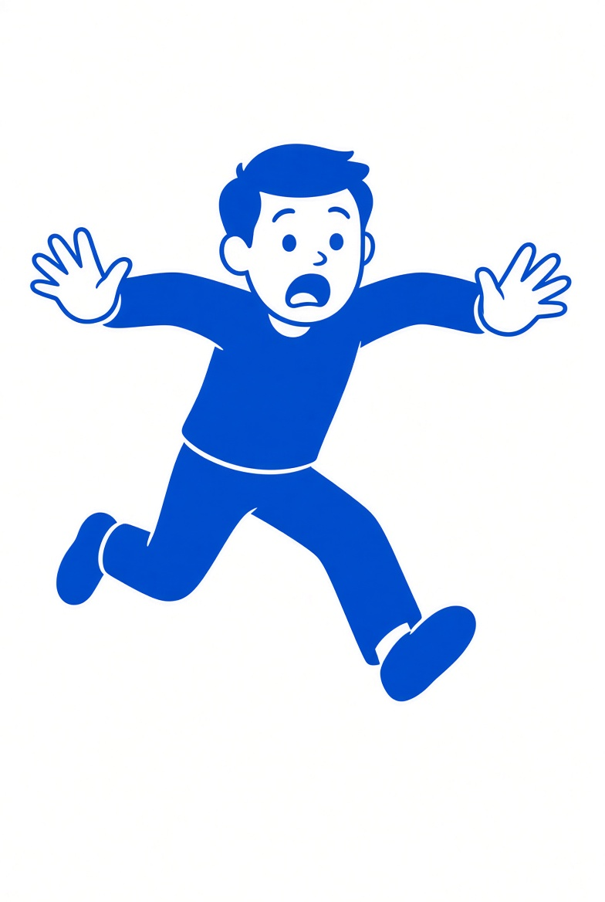
vallen
to fall
onregelmatigrang 425Movement & positiongetekend
vielis gevallen
- Scene
- one adult is caught off balance on empty ground: the body tilted sharply forward with both arms flung out, the back foot off the ground, the front heel just lifting, the mouth open and the eyes wide. Neither hand touches the floor and the body is still above it.
- Must read
- an adult tipping over in mid-air with both arms flung out.
- Avoid
- both feet flat with the body bent at the waist and the hands on the knees (bukken); a person already on the floor with one hand pushing the ground (opstaan); a person crouching on a low stool (zitten); a pushed-over chair.
- Alt text
- Een volwassene raakt uit balans: het lichaam helt voorover, beide armen zwaaien en de achterste voet is los van de grond.
vallen.png · rang 425 · A1 onregelmatig · lexicon woorden.tsv

rijden
to drive
onregelmatigrang 461Transport & travelgetekend
reedheeft/is gereden
- Scene
- one adult sits behind the steering wheel of a plain car seen from the side, both hands on the wheel and eyes on the road ahead; the headlights are lit and the wheels sit on a stretch of road with a single white dashed line. Through the window only the driver is visible.
- Must read
- a person at a steering wheel with the car on a road.
- Avoid
- a bare bicycle with a rider leaning forward (fietsen); a person standing beside an open bonnet (repareren); a hand on a bus door handle (instappen); a person walking along the road (lopen); an aeroplane above clouds (vliegen).
- Alt text
- Een volwassene zit achter het stuur van een auto op een weg met een witte streep, de handen aan het wiel.
rijden.png · rang 461 · A1 onregelmatig · lexicon woorden.tsv

kiezen
to choose
onregelmatigrang 517Thought & knowledgegetekend
koosheeft gekozen
- Scene
- one adult stands at a plain table with two jars side by side, one tall and one round; the right hand is lifted and held still open above the round jar, both eyes on it. The hand has not touched a jar.
- Must read
- one hand hovering above one of two jars while the other jar stays untouched.
- Avoid
- two jars already in the hands and both carried (dragen); one jar lifted off the table and held up (nemen); coins counted into a palm (betalen); a person pointing with a straight finger at a menu (wijzen).
- Alt text
- Een volwassene staat bij een tafel met twee potten en houdt de hand boven een van de twee, zonder die aan te raken.
kiezen.png · rang 517 · A1 onregelmatig · lexicon woorden.tsv

schrijven
to write
onregelmatigrang 518Communication & languagegetekend
schreefheeft geschreven
- Scene
- one adult sits at a table with a single sheet of paper flat in front of them, a pen gripped in one hand with the nib pressed to the paper, a short line of plain marks just made, and the eyes on the tip. The other hand holds the paper steady.
- Must read
- a pen point pressed to paper on which marks have just appeared.
- Avoid
- eyes on grey print lines inside an open book (lezen); a keyboard under both hands (werken); a brush with a picture on the page (tekenen); a pen held up and capped.
- Alt text
- Een volwassene zit aan een tafel en duwt een pen op een vel papier waarop al een paar korte strepen staan.
schrijven.png · rang 518 · A1 onregelmatig · lexicon woorden.tsv
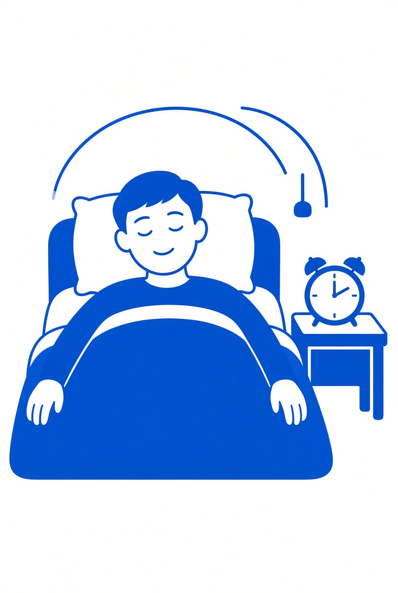
slapen
to sleep
onregelmatigrang 528Body & healthgetekend
sliepheeft geslapen
- Scene
- one adult lies in a bed with the blanket pulled up to the shoulders, the head on a pillow, both eyes closed, the mouth relaxed and both arms outside the covers. The room is dim and a round alarm clock sits on a small bedside table.
- Must read
- closed eyes and the face at rest under the blanket.
- Avoid
- open eyes looking at the ceiling with the blanket flat (liggen); a person sitting up on the floor with the head on a table (zitten); wide open mouth and a hand over it (geeuwen); a person walking in pyjamas (lopen).
- Alt text
- Een volwassene ligt onder een deken tot de schouders, de ogen dicht en het gezicht rustig; naast het bed staat een wekker.
slapen.png · rang 528 · A1 onregelmatig · lexicon woorden.tsv

spreken
to speak
onregelmatigrang 563Communication & languagegetekend
sprakheeft gesproken
- Scene
- one adult stands facing the viewer with one hand raised to chest height, the palm turned up and the fingers spread, mouth open mid-word; the other hand rests at the side. A single bold speech bubble with a plain line inside floats beside the head, and no second person is in the picture.
- Must read
- one adult mid-word with a speech bubble, facing the viewer alone.
- Avoid
- a second person facing them, both with short bars in two bubbles (praten); two bubbles and one hand passing a box (vertellen); a phone at the ear (bellen); a row of listeners in chairs (luisteren); letters inside the bubble.
- Alt text
- Een volwassene staat alleen voor de kijker met een open hand op borsthoogte en de mond open; naast het hoofd hangt een tekstballon.
spreken.png · rang 563 · A1 onregelmatig · lexicon woorden.tsv

dragen
to carry
onregelmatigrang 586Movement & positiongetekend
droegheeft gedragen
- Scene
- one adult walks left to right carrying a tall cardboard box with both arms wrapped around it, the box pressed against the chest and high enough to hide the chin, the back leaning slightly away from the weight, the eyes peering over the top edge of the box.
- Must read
- both arms hugging a tall box against the chest while walking.
- Avoid
- a crate balanced on the head with both arms up (brengen); a box passing from hand to hand between two people (geven); an arm hanging down with a shopping bag in the fingers (houden); a person lifting a box off the floor (tillen).
- Alt text
- Een volwassene loopt met een hoge doos tegen de borst, de armen eromheen en de kin erachter verborgen.
dragen.png · rang 586 · A1 onregelmatig · lexicon woorden.tsv

winnen
to win
onregelmatigrang 605Sport & gamesgetekend
wonheeft gewonnen
- Scene
- one adult stands on a low step with both arms raised in a V and an open mouth, a cup held high in one hand; a small rosette is pinned to the chest and pieces of paper fall around them. One other adult stands behind, looking down, arms hanging, holding nothing.
- Must read
- one adult with both arms up and a cup held high, a paper rosette on the chest.
- Avoid
- one adult alone holding up a key with a quiet smile (vinden); two people shaking hands at a table with coins on it (delen); a person running past a ribbon (rennen); a crowd and a stadium; a scoreboard with figures.
- Alt text
- Een volwassene steekt beide armen omhoog met een beker in een hand, een rozet op de borst en papieren snippers in de lucht.
winnen.png · rang 605 · A1 onregelmatig · lexicon woorden.tsv

genieten
to enjoy
onregelmatigrang 612Abstract & generalgetekend
genootheeft genoten
- Scene
- one adult sits relaxed on a plain chair with the head tipped back, both eyes closed and a wide open smile; one hand holds a full steaming cup close under the nose, and nothing else is in the room.
- Must read
- a wide closed-eyed smile with a cup held under the nose.
- Avoid
- an open mouth with both hands on the belly and the head thrown back (lachen); a person holding up a cup as a prize (winnen); a fork lifted to an open mouth (eten); a nose bent close to food on a table (ruiken); a sun or a heart drawn above the head.
- Alt text
- Een volwassene zit met het hoofd achterover en de ogen dicht te glimlachen, een volle kop onder de neus.
genieten.png · rang 612 · A1 onregelmatig · lexicon woorden.tsv
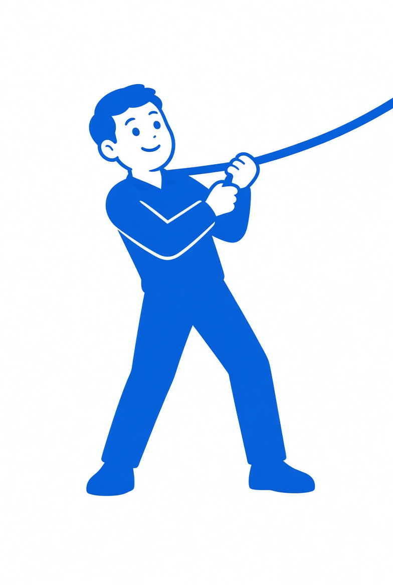
trekken
to pull
onregelmatigrang 641Movement & positiongetekend
trokheeft/is getrokken
- Scene
- one adult stands braced with both feet apart and leans back, both hands closed around a long rope that runs over the shoulder towards the right edge of the frame; the elbows bend, the rope is taut, and nothing is attached at the far end.
- Must read
- a taut rope taken in both hands with the body leaning back.
- Avoid
- a rope slack in one hand with both people close together (houden); a palm flat against a box and pushing it forward (duwen); a heavy box wrapped in both arms (dragen); a horse or a cart at the end of the rope; a winch.
- Alt text
- Een volwassene staat schrap met beide voeten uit elkaar en houdt een strak touw met twee handen vast, het lichaam achterover.
trekken.png · rang 641 · A1 onregelmatig · lexicon woorden.tsv

bieden
to offer
onregelmatigrang 657Money & tradegetekend
boodheeft geboden
- Scene
- one adult at a plain counter holds out one folded banknote flat on an open palm towards a shopkeeper, who stands facing them with a lamp in one hand and the other palm raised and turned down. The note is offered and not yet taken, and no till or price card is in the frame.
- Must read
- a note held out flat on an open palm towards a shopkeeper who has not taken it.
- Avoid
- a note pushed flat along the counter beside a paper bag (kopen); one hand held palm-up and empty with no note (vragen); a cardboard box passing between two people (geven); a note pressed back into the same hand (krijgen).
- Alt text
- Een volwassene houdt een opgevouwen briefje op een open handpalm naar de winkelier, die een lamp vasthoudt en de andere hand ophoudt.
bieden.png · rang 657 · A1 onregelmatig · lexicon woorden.tsv

verlaten
to leave (a place)
onregelmatigrang 676Movement & positiongetekend
verlietheeft verlaten
- Scene
- one adult steps through a plain doorway out of a room, seen from behind, one foot already on the far side of the threshold; the near hand pulls the door shut behind them, so the room with one chair inside is only half visible. The direction of travel is out, away from the chair.
- Must read
- a person seen from behind stepping out through a door and pulling it shut.
- Avoid
- both people facing each other across a threshold with two open palms (praten); a person standing still inside a room beside a chair (blijven); a hand laid on a door handle with the body facing the room (sluiten); a person arriving through the door towards the viewer (komen).
- Alt text
- Een volwassene stapt met de rug naar ons door een deuropening naar buiten en trekt de deur achter zich dicht.
verlaten.png · rang 676 · A1 onregelmatig · lexicon woorden.tsv
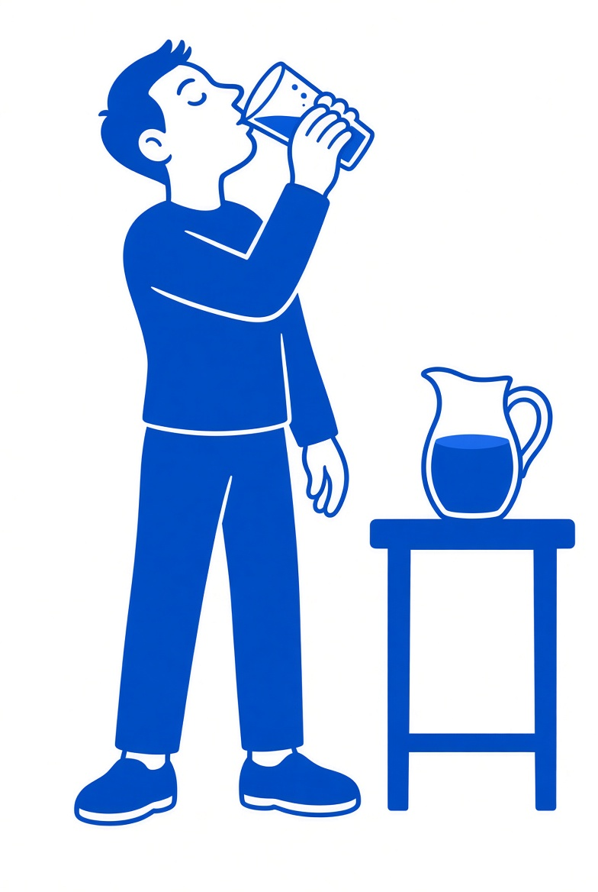
drinken
to drink
onregelmatigrang 678Food & drinkgetekend
dronkheeft gedronken
- Scene
- one adult stands with the head tipped back and a plain glass held to the lips with one hand, the glass tilted and half empty, a few drops at the rim, the eyes shut. The other hand hangs at the side. A full jug of water stands on a table to the side.
- Must read
- a tilted glass at the lips with the head tipped back.
- Avoid
- a plate, a fork and a full mouth (eten); a raised bottle held away from the mouth (proosten); a closed cup on a table with both hands beside it (wachten); a tap running into a sink (wassen).
- Alt text
- Een volwassene staat met het hoofd achterover en een schuin gehouden halfleeg glas aan de lippen; naast hem staat een kan water.
drinken.png · rang 678 · A1 onregelmatig · lexicon woorden.tsv
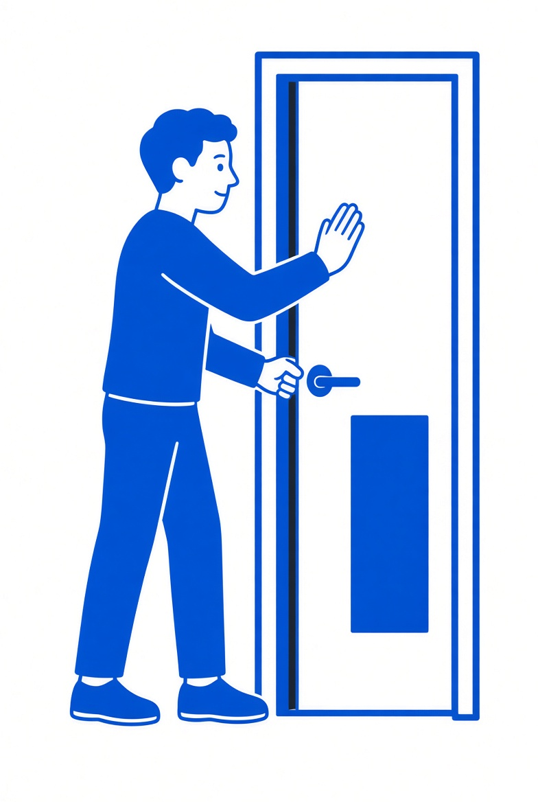
sluiten
to close
onregelmatigrang 731Movement & positiongetekend
slootheeft gesloten
- Scene
- one adult faces a door from inside the room and pushes it shut with the flat of one hand on the door face, the other hand on the handle; the door is a hand width from its frame, with a dark sliver of the room beyond still showing and the person looking at the gap.
- Must read
- a door pushed nearly shut with a hand flat on it and a sliver of gap left.
- Avoid
- a person seen from behind stepping out through a doorway (verlaten); a key turned in a lock with a padlock visible (op slot doen); a hand held flat high on a barrier beside a round sign (mogen); a wide-open door with the frame empty.
- Alt text
- Een volwassene duwt van binnen met een vlakke hand een deur dicht, met nog een smalle kier en het oog op die kier.
sluiten.png · rang 731 · A1 onregelmatig · lexicon woorden.tsv
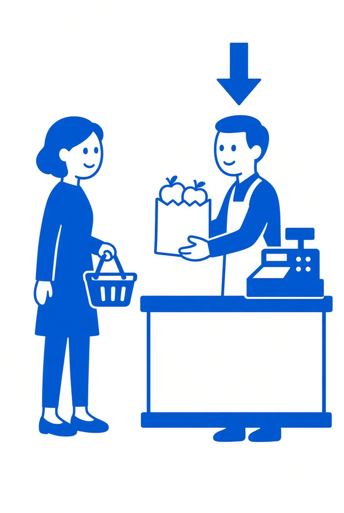
verkopen
to sell
onregelmatigrang 764Money & tradegetekend
verkochtheeft verkocht
- Scene
- one adult behind a market stall holds out a paper bag of apples with both hands towards a customer, both looking at the bag; the hands of the customer are still at their sides carrying a small basket. A plain stack of folded notes and a row of apples lie on the stall between them.
- Must read
- an apple bag held out over a stall towards a customer with full hands.
- Avoid
- the customer already holding the bag and reaching back with a note (kopen); a note pushed across a counter (betalen); an empty market stall with no person behind it (huren); two adults shaking hands at a table (delen).
- Alt text
- Een volwassene achter een marktkraam houdt een zak appels naar een klant, die een mandje vasthoudt en de handen nog niet uitsteekt.
verkopen.png · rang 764 · A1 onregelmatig · lexicon woorden.tsv
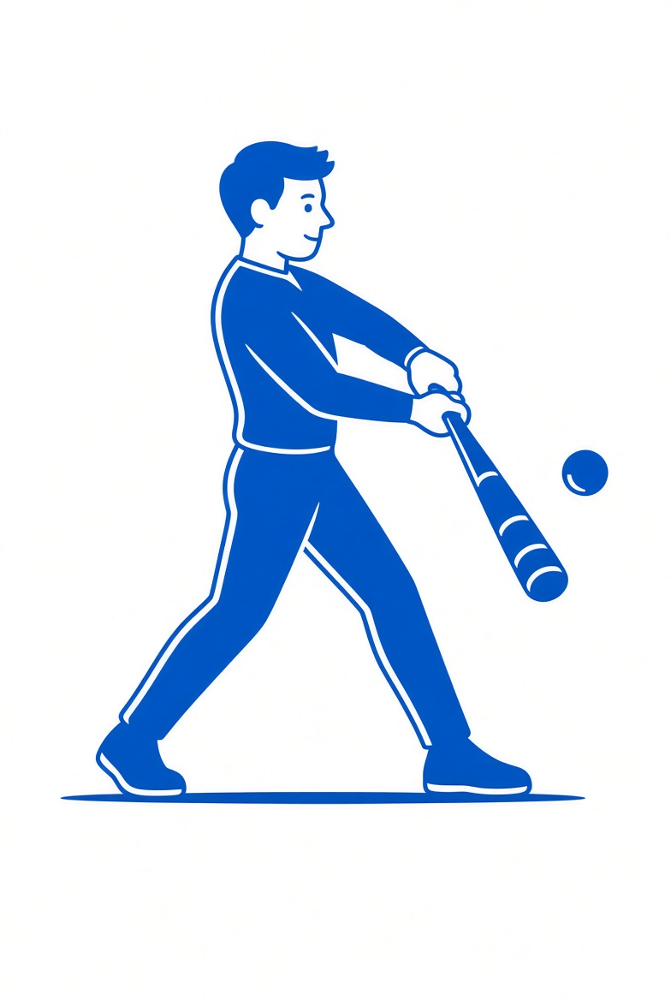
slaan
to hit
onregelmatigrang 774Abstract & generalgetekend
sloegheeft geslagen
- Scene
- one adult stands side-on and swings a flat wooden bat down onto a ball in the air at hip height; both hands grip the handle, the elbows bent, the shoulders turned and the eyes on the ball. The ball has just left the bat and the ground below is empty.
- Must read
- a flat bat swung with both hands at a small ball in the air.
- Avoid
- a hand flat on a door pushing it shut (sluiten); two open palms meeting high above the head (klappen); a hammer on a nail in a plank (hameren); a fist drawn back with nothing in front of it (meppen).
- Alt text
- Een volwassene staat opzij en zwaait een houten slagplank met beide handen naar een balletje in de lucht.
slaan.png · rang 774 · A1 onregelmatig · lexicon woorden.tsv
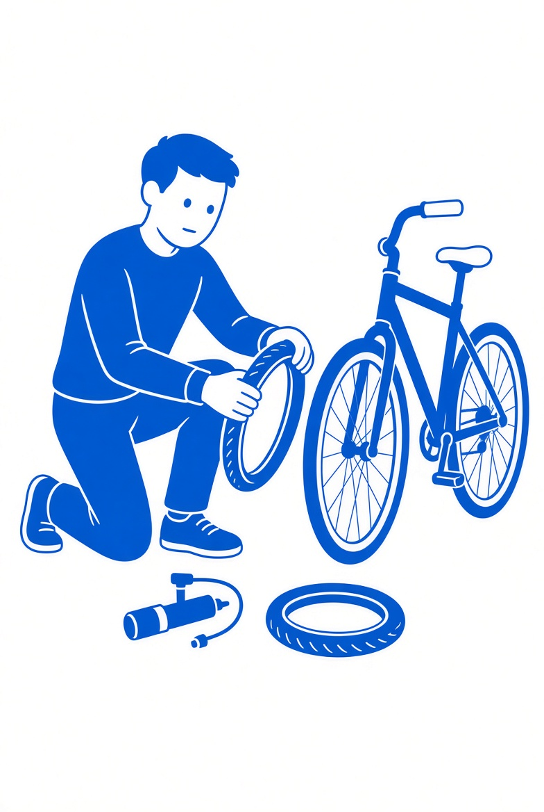
vervangen
to replace
onregelmatigrang 776Abstract & generalgetekend
vervingheeft vervangen
- Scene
- one adult kneels beside a bicycle and lifts a flat tyre out of the front fork with both hands, a small pump and a second tyre already on the ground beside them; the old tyre is clear of the rim and held up, and the rest of the bicycle stays whole.
- Must read
- a flat tyre held up in both hands, clear of the bicycle wheel.
- Avoid
- a pump in one hand against a bare tyre (repareren); a box carried towards a half-open door (brengen); one note offered flat on a palm (bieden); a coin and a price sign on a counter (betalen).
- Alt text
- Iemand houdt op de hurken bij een fiets een lekke band omhoog, los van het wiel.
vervangen.png · rang 776 · A1 onregelmatig · lexicon woorden.tsv
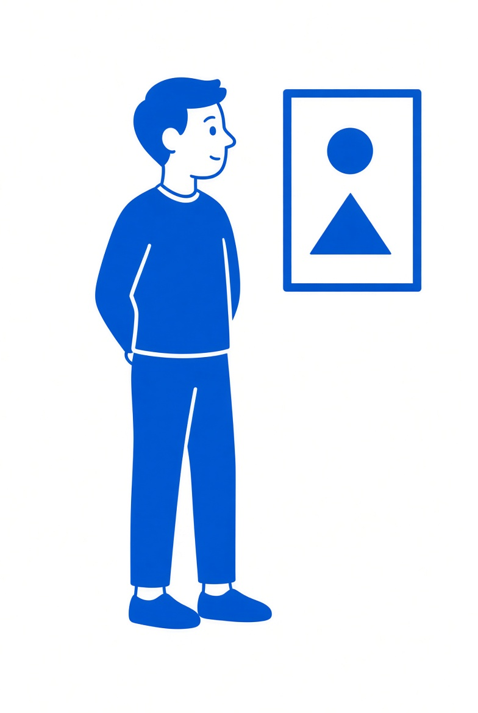
bekijken
to look at
onregelmatigrang 807Abstract & generalgetekend
bekeekheeft bekeken
- Scene
- one adult stands in front of a picture hanging on a wall and leans in with both hands behind the back and the eyes fixed on the frame; the picture shows two plain shapes. A second adult is not in the room, and no other object is in the frame.
- Must read
- one adult leaning towards a hanging framed picture, hands behind the back.
- Avoid
- two people facing each other with a bar above each head (praten); a leaflet held in two hands before the eyes (lezen); a hand behind an ear beside a radio (luisteren); a person holding a magnifying glass up to the frame (onderzoeken).
- Alt text
- Iemand staat voor een ingelijste tekening en kijkt er voorover naar.
bekijken.png · rang 807 · A1 onregelmatig · lexicon woorden.tsv

verliezen
to lose
onregelmatigrang 841Abstract & generalgetekend
verloorheeft/is verloren
- Scene
- one adult stands at a plain table with the shoulders slumped and the head low, both hands in the pockets, looking down at a small chessboard on the table where only black pieces stand; a folded paper rosette torn in two lies next to the board, and no other person is in the picture.
- Must read
- a slumped figure looking down at a chessboard with nothing of theirs left on it.
- Avoid
- one adult with both arms raised and a cup held high (winnen); a hand closing over a key on the ground (vinden); a person on their knees reaching under a sofa (zoeken); a purse with coins spilled on the floor (vallen).
- Alt text
- Een volwassene staat met hangende schouders bij een schaakbord met alleen zwarte stukken en een gescheurd rozet ernaast.
verliezen.png · rang 841 · A1 onregelmatig · lexicon woorden.tsv

onderzoeken
to investigate
onregelmatigrang 926Thought & knowledgegetekend
onderzochtheeft onderzocht
- Scene
- one adult kneels beside a broken bicycle and holds a large round magnifying glass up at arm's length, looking through it at the bent rear wheel; the other hand turns the wheel slowly. Two loose screws lie on the ground, and a spanner lies flat nearby.
- Must read
- a magnifying glass held up to a bicycle wheel.
- Avoid
- a flat tyre held up in both hands off the fork (vervangen); a person leaning close to a hanging picture (bekijken); a hammer and planks on a table (maken); a pointer on a wall chart (wijzen).
- Alt text
- Iemand bekijkt op de hurken bij een fiets het wiel met een vergrootglas, van dichtbij.
onderzoeken.png · rang 926 · A1 onregelmatig · lexicon woorden.tsv

bezoeken
to visit
onregelmatigrang 938People & relationsgetekend
bezochtheeft bezocht
- Scene
- two adults stand in a doorway facing each other: the visitor steps in with a bunch of flowers held out in both hands, and the resident stands back with a hand on the open door and smiles. Behind the resident a lit room is visible, and the doorway frames both.
- Must read
- a bunch of flowers held out in a doorway to a person who has the door open.
- Avoid
- a box carried away towards a closed door and laid down outside (brengen); one adult walking alone through an empty room (wonen); two adults at a market stall (kopen); a crowd of many people in a hall.
- Alt text
- Iemand stapt in de deuropening binnen met een bos bloemen voor een ander.
bezoeken.png · rang 938 · A1 onregelmatig · lexicon woorden.tsv

lachen
to laugh
onregelmatigrang 946Emotion & feelinggetekend
lachteheeft gelachen
- Scene
- one adult stands facing slightly away with the head thrown back, the mouth wide open, both eyes squeezed shut in curved lines, one hand flat on the belly and the shoulders lifted; the chest is clearly shaking. The mouth is open for laughing, with no sound shown.
- Must read
- a head thrown back with a wide open mouth and eyes squeezed shut.
- Avoid
- a person alone with a hand raised and a speech bubble, the mouth open in words (spreken); a person with the head tipped back beside an open notebook (zingen); a hand over the mouth with wide eyes (schrikken); a single tear on a straight face (huilen); a smiling face with the mouth closed.
- Alt text
- Een volwassene gooit het hoofd achterover met een wijd open mond, de ogen tot streepjes dicht en een hand op de buik.
lachen.png · rang 946 · A1 onregelmatig · lexicon woorden.tsv
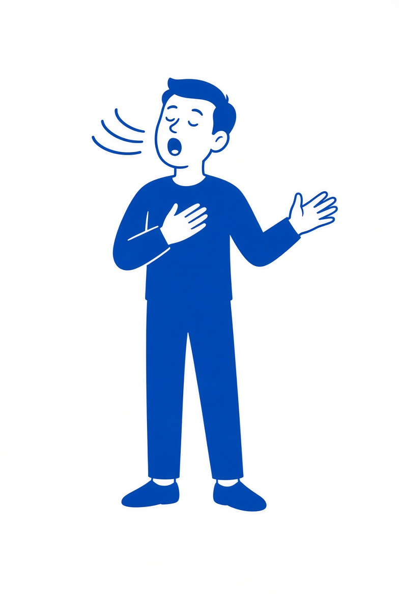
zingen
to sing
onregelmatigrang 956Arts & mediagetekend
zongheeft gezongen
- Scene
- one adult stands in the middle of empty ground with the head slightly lifted and the mouth open, one hand pressed flat on the chest, the other stretched out to the side, eyes closed. A few bold curved lines spread from the open mouth, and no other person or object is in the picture.
- Must read
- an open mouth with curved lines spreading from it, one hand on the chest.
- Avoid
- a face bent double with a hand on the belly (lachen); a microphone at the mouth (spreken); a tall stand with a sheet of paper on it (lezen); a guitar or a piano; letters inside the curved lines.
- Alt text
- Een volwassene staat alleen met het hoofd iets geheven en de mond open; uit de mond waaieren een paar gebogen lijnen.
zingen.png · rang 956 · A1 onregelmatig · lexicon woorden.tsv
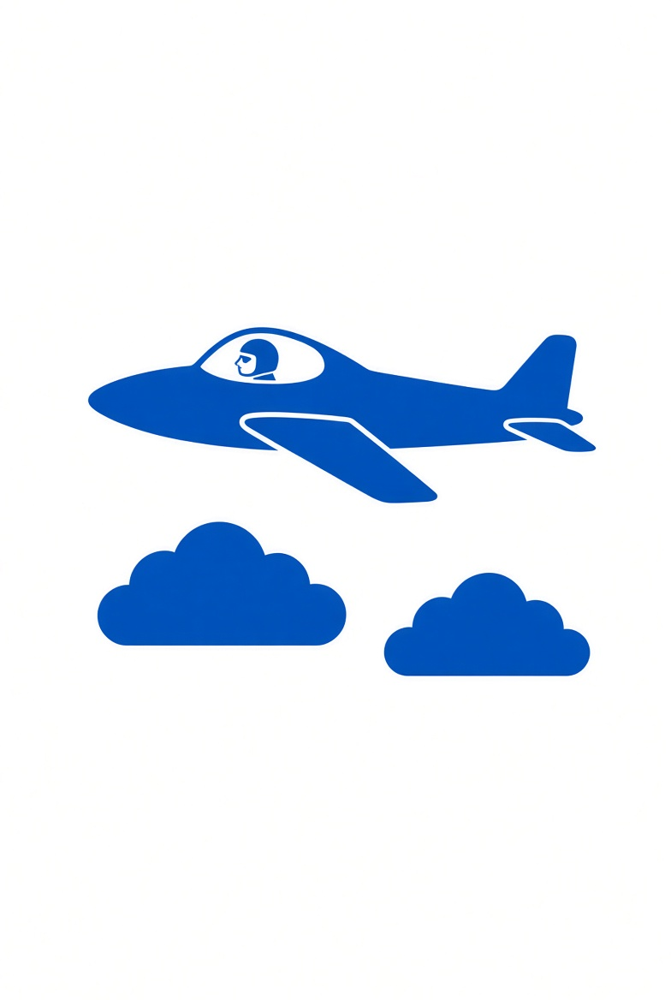
vliegen
to fly
onregelmatigrang 992Transport & travelgetekend
vloogheeft/is gevlogen
- Scene
- a small aeroplane in side view travels level across an empty sky, wings straight and nose slightly up, with two bold flat clouds below it and no ground in the picture; a pilot's head shows in the cockpit window.
- Must read
- an aeroplane in the air with clouds below it.
- Avoid
- a bird with both wings spread (fladderen); an aeroplane touching a runway (landen); a hot-air balloon leaving a field (stijgen); a person with both arms out jumping (springen); a jet trail across the sky.
- Alt text
- Een klein toestel met vleugels gaat horizontaal door de lucht, boven twee platte wolken.
vliegen.png · rang 992 · A1 onregelmatig · lexicon woorden.tsv